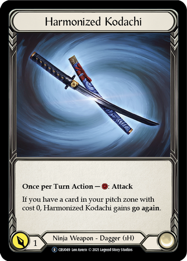

About Flesh and Blood
Flesh and Blood has a very unique playstyle compared to other TCGs. In FaB, you act as the hero that you have chosen to build your deck around, and depending on the class of the hero that you have chosen, you will have access to cards that other heroes won't. For example, look at the heroes that I have put below.


Notice how at the bottom of each of the cards, each of them have a unique type. For Katsu, his is "Ninja" and for Chane, his is "Shadow" and "Runeblade", meaning that Katsu can use ninja equipment
and cards, such as the Harmonized Kodachi shown below, and Chane can use the Nebula Blade shown below, but they can not swap.
